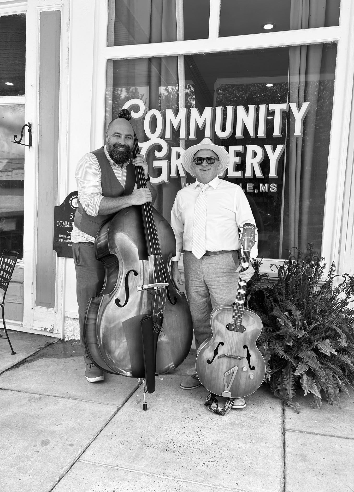
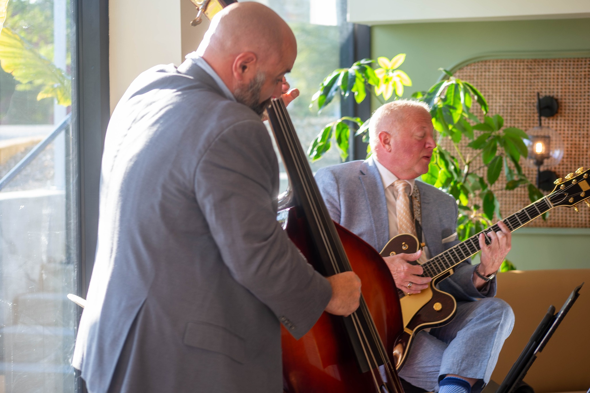

Watch & Listen
Hear the Duo

Live Performance
Standley, Tupper & Petersen — Live

Live Performance
Standley, Tupper & Petersen — Live
More performances on YouTube →
Live Jazz · Baton Rouge, Louisiana
Guitarist Jim Standley, bassist Jordan Tupper, and tenor saxophonist Glen Petersen — timeless classics, performed in the cool jazz style. A fun and tasteful vibe for any occasion or venue.
About
Standley, Tupper & Petersen is a Baton Rouge-based jazz trio offering an array of timeless classics performed in the cool jazz style — the unhurried, melodic sound that turns a room into an atmosphere.
Guitar, upright bass, and tenor saxophone — standards you know and love, played with taste and a warm, full sound. Loud enough to enjoy, soft enough to talk over — the trio brings the right energy to dinner services, receptions, galas, and listening rooms across Baton Rouge, south Louisiana, and southwest Mississippi.

Community Grocery Café · Woodville, MS
Catch Us Live
5412 Government St, Baton Rouge, LA · spokeandhubbr.com · Facebook
5412 Government St, Baton Rouge, LA · spokeandhubbr.com · Facebook
5412 Government St, Baton Rouge, LA · spokeandhubbr.com · Facebook
5412 Government St, Baton Rouge, LA · spokeandhubbr.com · Facebook
5412 Government St, Baton Rouge, LA · spokeandhubbr.com · Facebook
525 Commercial Row, Woodville, MS · communitygroceryms.com · Facebook
525 Commercial Row, Woodville, MS · communitygroceryms.com · Facebook
Want Standley, Tupper & Petersen at your venue or event? Get in touch →
The Players
Guitar
Jim Standley anchors the duo with warm, lyrical jazz guitar — melody, harmony, and rhythm all at once. His playing draws on decades of the great American songbook, delivered with the relaxed confidence that defines the cool jazz tradition.
Bass
Jordan Tupper is a Baton Rouge musician and music educator, a 2024 Grammy Music Educator Award Quarterfinalist, and a bassist whose groove holds the floor down whether the room is a jazz café or a packed dance hall. He also performs with Night Hog and Cover 6 Band.
More about Jordan →
Where We Play
Dinner-service jazz that lifts the room without overpowering the conversation. The trio's full sound fills a space beautifully.
Cocktail hours, dinners, and ceremonies with a classic, elegant soundtrack.
Parties, anniversaries, and gatherings that call for something a cut above a playlist.
Polished, professional live jazz for receptions, fundraisers, and client events.
Watch & Listen
Live Performance
Standley, Tupper & Petersen — Live
Live Performance
Standley, Tupper & Petersen — Live
More performances on YouTube →
In the Press
JamBase
2023
Music Festival Wizard
2023
Eagle 98.1
2023
SoundCloud
Active
Active
For press inquiries, interview requests, or booking information, contact jstandley@getgordon.com or jordan.j.tupper@gmail.com.
Get In Touch
Planning an event in Baton Rouge or south Louisiana? Tell us the date, the room, and the vibe — Standley, Tupper & Petersen will take it from there.
Follow Along
Find Us on Facebook
Stay up to date on gig announcements, photos, and updates from Standley, Tupper & Petersen. Follow us on Facebook for the latest.
Standley, Tupper & Petersen on Facebook